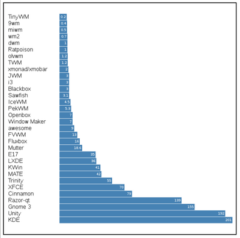

“Lights”, évidemment!
Il y a quelques années, me retrouvant sans ordinateur, j’hérite de la part de certains proches, d’un netbook Acer, puis d’un EEEPC quelques temps plus tard. Ces pauvres machines étouffant sous Windows, n’étaient plus utilisées. Bien sûr j’y installai une Debian, animé par le souci de la légèreté.
Je connaissais déjà les bureaux et gestionnaires de fenêtre légers tels que Lxde et Xfce, mais un jour, fouinant sur le net, je suis tombé sur le graphique ci-dessous. J’allais découvrir alors tout un monde de WMs, d’applications légères, de minimalisme, de configurations et de bidouilles.
 Lxterminal/Mtm, launcher(nnn) - Fuente
De cette liste, Je les ai tous essayé, et bien d’autres. Beaucoup ont suscité mon intérêt, et à une certaine époque, essayer et découvrir des WMs avait quelque chose d’addictif. Ce goût pour le minimalisme, qui touche aussi d’autres domaines de la vie, est resté.
Aujourd’hui, sur une configuration matérielle plus puissante, j’utilise OpenBox, JWM, Kde avec Ubuntu Studio, ainsi que I3WM. Mais pour un bon vieux IBM Thinkpad T42 d’occasion, c’est :
. . . . . . . .
{kind=link}